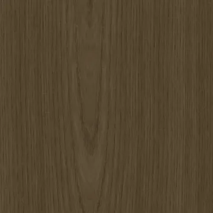
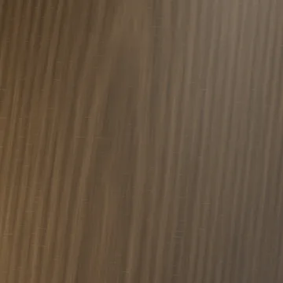
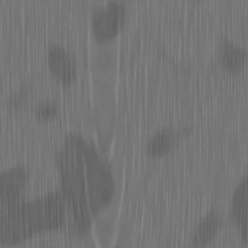
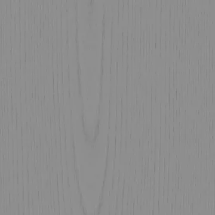
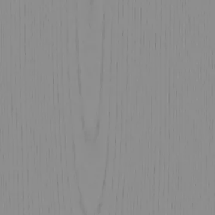
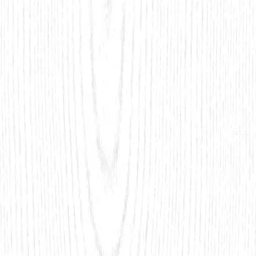
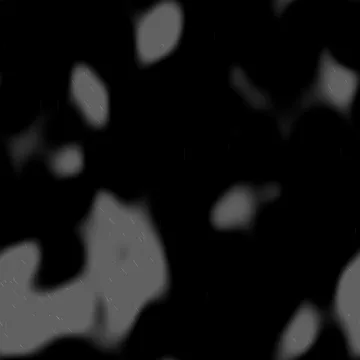

Base color
sRGB · RGB8
4096 × 4096 · 4.84 MiB
SHA-256
5ead9aef27a72377f15eb0730bf74c30257bf3ac632caffd9335562824e3328dRebuilt suite / 04
Procedural rift-cut fumed oak with growth-volume earlywood vessels, finite medullary ray plates, shallow lumen relief and worn low-gloss finish.
The specimen and matched surface proof are different presentations. Native texture resolution does not determine render resolution.


Specimen: Blender 4.5.3 LTS · CPU · 768 maximum / 128 minimum samples · adaptive threshold 0.005 · denoising: false · AgX.
Specimen manifest · Matched-proof manifest · Editable specimen scenes · Renderer source · Review and remaining limits
Specimen SHA-256 6596ac70f0e94c508a02afcb7767b19bd92dc74223cc1906f401992f8d0e119a
Proof SHA-256 6445925eca543d9f88e9f7387e09b778177a13c9f7ca9acda6d7675cac9a29e2
Base color uses sRGB; data maps use linear / Non-Color. Displacement in meters = (height − 0.5) × 0.00045. Pair macro height with residual normal for geometric displacement, or use the full normal without macro displacement.
Previews below are reduced display copies. Each link opens the unchanged native 4096 × 4096 map.

sRGB · RGB8
4096 × 4096 · 4.84 MiB
5ead9aef27a72377f15eb0730bf74c30257bf3ac632caffd9335562824e3328d
Linear · Gray8
4096 × 4096 · 1.95 MiB
8ac39a892be5263f13ece157b0456da2645e51fdc5f656f89ef6a6e4460b4223
Linear · Gray8
4096 × 4096 · 0.02 MiB
334c4a79f661f8f9c215b7fd06284d5fb3fe7fd3822f10dc8842f85f664c9a7fTangent space · RGB8
4096 × 4096 · 3.52 MiB
3c31e8f3a2e9b208014e4de8f8a5b355c58e67e87e46e075f5e67d0e74b82649Tangent space · RGB8
4096 × 4096 · 3.52 MiB
d5e1db3591615890f16e2c5460fad2ac707df3712b6dd94124247e6cd39613e0
Linear · Gray16
4096 × 4096 · 12.46 MiB
0e0be000831f20e4fc1a4d3db6d65049132d6e5b3ca9b17426167b9e7e362e52
Linear · Gray16
4096 × 4096 · 11.17 MiB
6230eeac6ba6865fbb5e354d10de673e4a3c61c2830119da7f69a44903a8f1fe
Tangent space · RGB8
4096 × 4096 · 3.76 MiB
21cffcb02a2a5b5fede61cbc677607a210500832c6b6f6098f2c9acdb9e31c31
Linear · Gray8
4096 × 4096 · 1.14 MiB
22b45725093f873476b6eaeb76c5b80c3b464044c706f628484d538a074a1d0dLinear · R: AO / G: roughness / B: metallic
4096 × 4096 · 3.20 MiB
a2e3f8a465534e6f4e5de4e86db9b6221248a5e1756466f2241ce9823cc23b3e
Linear · Gray8
4096 × 4096 · 0.52 MiB
1554deb14af09c62f912b6269d9186f0a257c3815a8a325e390ce63ddc1d79bd
Linear · Gray8
4096 × 4096 · 0.02 MiB
eb472d6bf383e4da4fb64a8cedee8fb37709545cad9a1058396c5b77ba2c577eThe exported wood maps are finite cuts. The Blender wood shader uses a separate 3D growth volume with per-object saw planes and coherent end grain; the maps do not encode that volume.
Physical material metadata · Original appearance comparison · Preserved baseline evidence